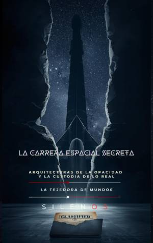

Illuminati
LA CARRERA ESPACIAL SECRETA : Arquitecturas de la opacidad y la custodia de lo real
Sinopsis
Descubre la verdad detrás del horizonte: La Carrera Espacial Secreta ¿Es la historia que conocemos sobre la conquista del espacio solo la fachada de una estructura mucho más profunda y opaca? En La Carrera Espacial Secreta: Arquitecturas de la opacidad y la custodia de lo real, los autores Manuel Rodsua y Cristina Lobo nos invitan a un viaje de investigación que desafía los relatos oficiales y desvela los mecanismos del secreto de Estado. A través de una narrativa rigurosa y fascinante, este libro explora la existencia de un entramado de programas militares clasificados, agencias de inteligencia y desarrollos tecnológicos que operan fuera del escrutinio público. Desde los presupuestos "fantasma" hasta la ingeniería de lo imposible, la obra analiza cómo se ha construido una civilización disidente que custodia las llaves de nuestra realidad tecnológica y social. ¿Qué encontrarás en este libro? La Fachada y el Método: Un análisis crítico sobre cómo se construye la opacidad institucional y por qué aceptamos el relato oficial de la historia. La Vertical Oculta: Un recorrido por el desarrollo técnico operativo de la carrera espacial paralela, incluyendo proyectos de alto impacto e infraestructuras invisibles. La Custodia de lo Real: Una reflexión profunda sobre a quién pertenece la verdad y las implicaciones de que una minoría controle los marcos de sentido de la humanidad. Hacia una Auditoría Democrática: Propuestas concretas para recuperar la transparencia, la ética en el descubrimiento y el derecho a la verdad en una democracia real. ¿Por qué leer esta obra? Este no es solo un libro sobre cohetes y satélites; es un tratado sobre el poder, la consciencia y la libertad de pensar. Es una llamada a la responsabilidad colectiva para asegurar que la tecnología del futuro sea gobernada por principios que prioricen la dignidad humana y el bien común. Atrévete a mirar más allá de la placa de latón de los museos y descubre qué ocurre en la sala nocturna donde se escribe la verdadera historia de nuestra especie.